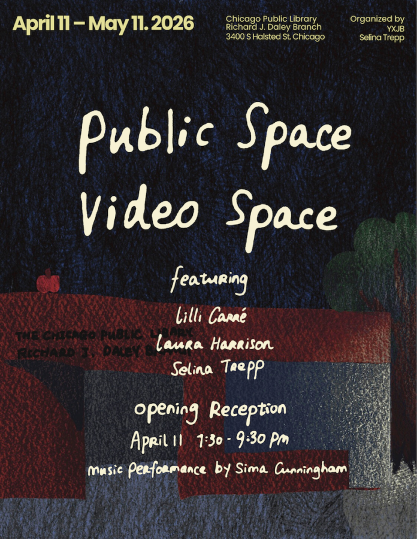

Public Space Video Space
Public Space Video Space (PSVS) is a public art initiative – organized by YXJB and Selina Trepp – that activates Chicago’s streetscapes at night by rear-projecting video animations onto the windows of closed or vacant storefronts.
For the inaugural launch, PSVS has partnered with the Chicago Public Library’s Richard J. Daley Branch for a month-long projection featuring premiere animations by Lilli Carré, Laura Harrison and Selina Trepp. The project will open on April 11th during Chicago EXPO Weekend, and will include a music performance by Sima Cunningham.
PSVS’ illuminated installations invite public engagement while enhancing nighttime visibility on sidewalks, contributing to safer streets for pedestrians. Featuring video work by animators, PSVS offers an unconventional platform for time-based media outside traditional gallery walls, transforming underused urban spaces by bringing free and accessible art directly into the public. Whether encountered on a walk through the neighborhood or during a planned visit, PSVS invites discovery, and a stronger connection to the city of Chicago.